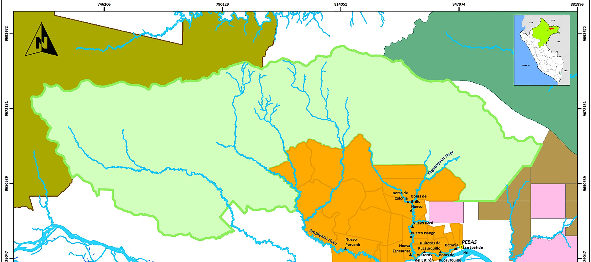

I was five years old when I first declared I would grow up to be a researcher. While the earliest iteration of this dream was to become an herpetologist, my passion for ecology has taken many forms over the past two decades. My work has also expanded into social science, reflecting my commitment to interdisciplinarity as a core aspect of my research identity. My involvement in a wide range of experiences has deepened my understanding of ecological interconnectedness and solidified my dedication to agroecology and soil science.

Projects
-

Walleye Pollock Bioenergetics
Independent, data analytics -focused research project exploring diet data from observer stomach collections under the guidance of Dr. Kirstin Holsman
-
Nutrient Availability and Arctic Treeline Migration
Undergraduate thesis project investigating a potential effect of soil nutrient availability on Arctic treeling dynamics; advised by Dr. Rebecca Hewitt
-

Payments for Ecosystem Services and Indigenous Self-Determination in Peru
Conducted literature reviews and interpreted primary documents in Spanish to support Dr. Ashwin Ravikumar's research on Global Environmental Politics; now part of a published work
Professional Experience
These pivotal work experiences have honed my research skills, interests, and values. They have shaped me into a driven, inquisitive, and detail-oriented researcher, passionate about collaboration and committed to fostering an open-minded, inclusive work environment
-

Food Habits lab, Research Scientist
Alaska Fisheries Science Center, Seattle, WA
-

Safford Lab, Field Crew Lead-Assistant
UC Davis / US Forest Service, Southern Sierra, CA
-
Book & Plow Farm, Farmer
Amherst College, Amherst, MA
Congue imperdiet
Donec imperdiet consequat consequat. Suspendisse feugiat congue
posuere. Nulla massa urna, fermentum eget quam aliquet.